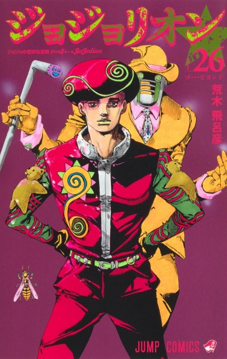

Тип: Манга
Тома: 24
Главы: 96
Статус: 2011-наши дни г.г.
Жанры: Экшен Приключения Детектив Сверхъестественное Сейнен
По-японски: ジョジョの奇妙な冒険 Part8 ジョジョリオン
По-английски: Jojorion, JoJo's Bizarre Adventure Part 8: Jojolion

Джоджолион/JoJolion
Информация
Описание
Восьмая часть «Невероятного приключения ДжоДжо» от Хирохико Араки, прямое продолжение «Гонки "Стальной шар"».
После странного землетрясения на окраине японского города Морио девушка находит голого парня, который не помнит ни откуда он, ни своего имени. Всё, что у него есть, — это матросская шапочка, родинка Джостаров в форме пятиконечной звезды и один из самых невероятных стендов.
После странного землетрясения на окраине японского города Морио девушка находит голого парня, который не помнит ни откуда он, ни своего имени. Всё, что у него есть, — это матросская шапочка, родинка Джостаров в форме пятиконечной звезды и один из самых невероятных стендов.
Персонажи
Читать